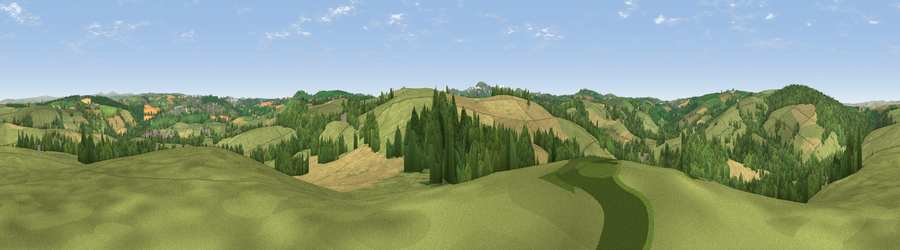

Viewpoint near Lanivet
#15115 in England · top 32% of its area beats it · near LanivetWhere it is
The exact computed spot (SX 01975 65975). Click the marker for map links.
The view, rendered

A 360° render of this exact spot computed from the terrain model, tree cover and land cover — summer colours, afternoon light, calibrated against photographs of famous viewpoints. Real trees, hedges and buildings will differ in detail.
The panorama
Grey silhouette: terrain skyline in each direction (720 bearings, Earth curvature and refraction included). Dashed green: skyline with trees (+15 m) and buildings (+8 m) as obstacles. Blue strip: how far the ground is visible on each bearing.
Where the view opens
Wedge length = distance to the farthest visible ground on that bearing (vegetation-aware). Rings at 10, 25 and 50 km.
What fills the view
48% grassland · 36% woodland · 15% cropland ·
Angular shares of the visible panorama (visual magnitude), not map area. Landscape diversity 0.45 (0–1 Shannon).
Key numbers
More beautiful places nearby
The staircase of upgrades: each row has a higher view potential than everything closer. Driving times are estimates from straight-line distance, calibrated against real road routing — check an actual route before setting out.
| Place | Direction | Drive | Score |
|---|---|---|---|
| Viewpoint near Lanivet | SSE · 1 km | ~3 min | 57.1 |
| Hustyn Downs | NW · 3 km | ~7 min | 67.7 |
| Viewpoint near Lanivet | ESE · 6 km | ~12 min | 73.1 |
| St Breock Beacon | WNW · 6 km | ~12 min | 74.5 |
| Viewpoint near Tremayne | WSW · 8 km | ~17 min | 75.5 |
| Viewpoint near Stenalees | S · 9 km | ~17 min | 88.0 |
| Viewpoint near Crackington Haven | NNE · 30 km | ~47 min | 88.1 |
| Viewpoint near Combe Martin | NNE · 100 km | ~125 min | 88.9 |
50.46009, -4.79132 · source: screening · position refined by local search. Computed location — check access rights before visiting.